Main Motivation
Q: How do you control the robot to reach the goal state while avoiding the obstacle?
Assume omnidirectional robot.
Week #3: PID Control, Potential Fields, Obstacle Avoidance
Main question: what are the controls that will take the system from state A to B?
You have to control the angular velocity \(w\)
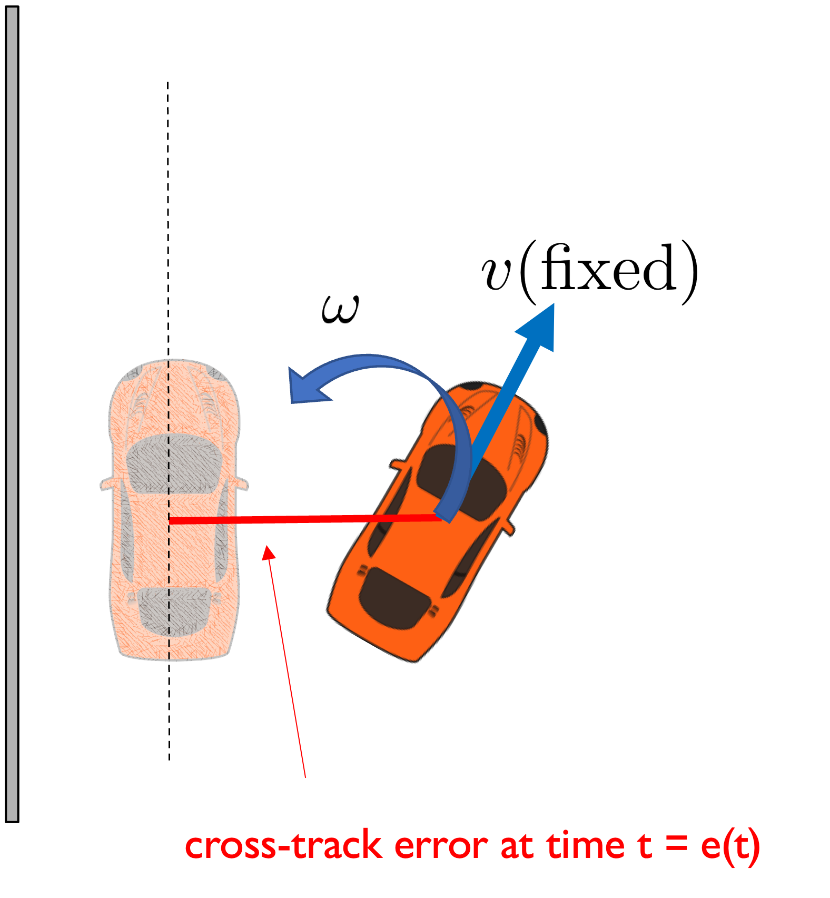
\[ \omega = \begin{cases} \omega_{\text{max}} & \text{if } \text{CTE} > 0 \\ -\omega_{\text{max}} & \text{if } \text{CTE} < 0 \\ 0 \end{cases} \]
What’s wrong with this?
\[ w = K_{p}e(t) \]
Will the car reach the target line?
Will the car overshoot the target line?
Is the asymptotic (steady-state) error zero?
\[ w = K_{p}e(t) \]
Will the car reach the target line? YES
Will the car overshoot the target line? YES
Is the asymptotic (steady-state) error zero? NO
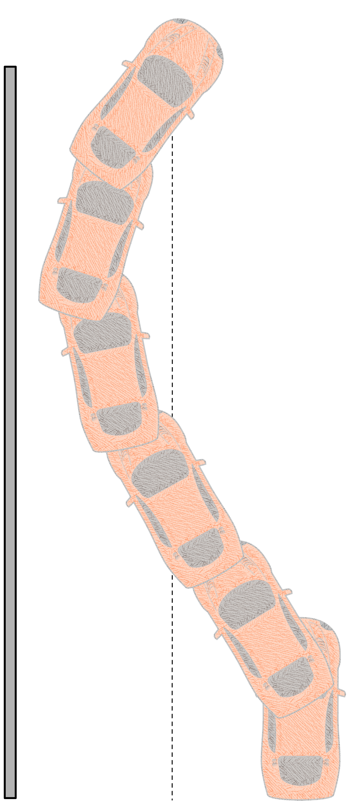
Need to reduce turning rate well before the line is approached
Idea: have a small proportional gain \(K_p\)
Problem: that means the car doesn’t turn very much
Idea: need to predict the error in the near future
This is good, as long as the error does not oscillate at a very high frequency
\[ W = K_{p}e(t) + K_{d}\dot e(t) \]
How do we set the gains?
What if there are systematic errors/biases?
What if the error estimate is very noisy?
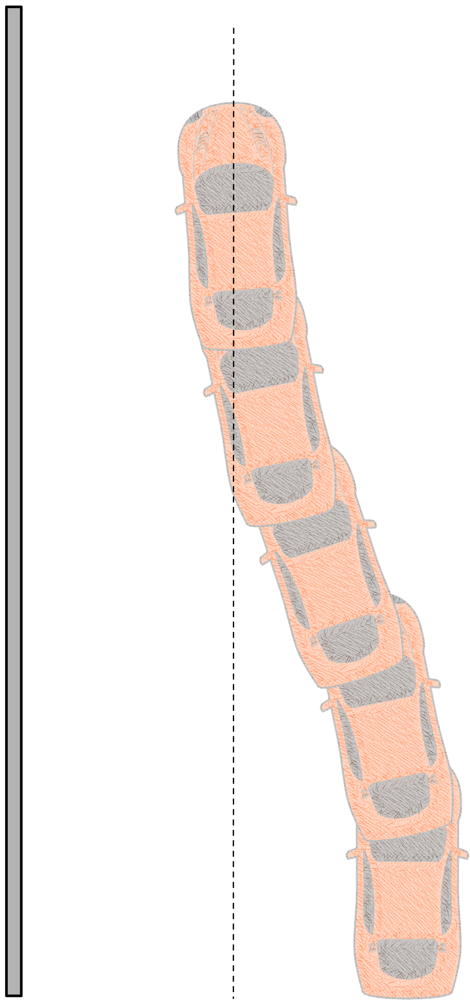
What happens if the control variable reaches the actuator’s limits?
I.e. the car can’t turn as fast as the controller commands it.
Actuator may remain at its limit for a long time while the controller modifies its commands
Error increases, integral term winds up while controller goes back to issuing commands in the feasible region.
\[ \omega(t) = K_p e(t) + K_d \dot{e}(t) + K_i \int_{\tau=0}^{\tau=t} e(\tau) d\tau \]
Perhaps the most widely used controller in industry and robotics.
Perhaps the easiest to code.
You will also see it as:
\[ \omega(t) = K_p \left[ e(t) + T_d \dot{e}(t) + \frac{1}{T_i} \int_{\tau=0}^{\tau=t} e(\tau) d\tau \right] \]
Moving average filter with uniform weights \[ \hat{x}_t = \frac{x_t + x_{t-1} + \ldots + x_{t-k+1}}{k} = \hat{x}_{t-1} + \frac{x_t - x_{t-k}}{k} \]
Potential problem: the larger the window of the filter the slower it is going to register changes.
Exponential filter \[ \hat{x}_t = \alpha \hat{x}_{t-1} + (1 - \alpha) x_t, \quad \alpha \in [0, 1] \]
Potential problem: the closer is to 1 the slower it is going to register changes.
Approximate the integral of error by a sum
Approximate the derivative of error by:
Limit the computed controls
Limit or stop the integral term when detecting large errors and windup
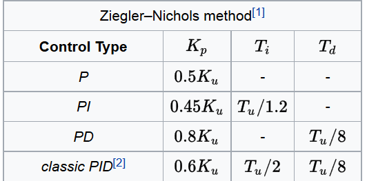
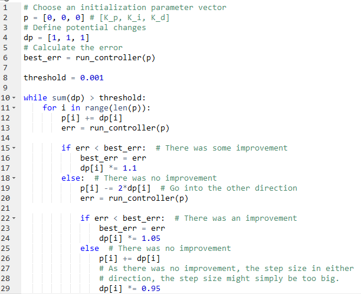
See Sebastian Thrun’s online class
“AI for robotics” on Udacity for more
details on this. He calls the algorithm
Twiddle and it is in Lesson 5.
Other names for this are
“Self-tuning PID controllers”
Sometimes we have multiple error sources (e.g. multiple sensors) and one actuator to control.
We can use a master PID loop that sets the setpoint for the slave PID loop. Master (outer loop) runs at low rate, while slave (inner loop) runs at higher rate.
One way of getting hierarchical control behavior.
Q: How do you control the robot to reach the goal state while avoiding the obstacle?
Q: How do you control the robot to reach the goal state while avoiding the obstacle?
Assume omnidirectional robot.
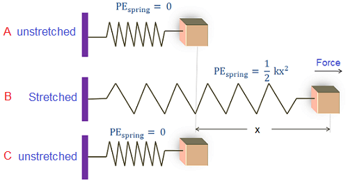
\[ \begin{align} U(x) &= \frac{1}{2}kx^2 \\ F(x) &= -kx \end{align} \]
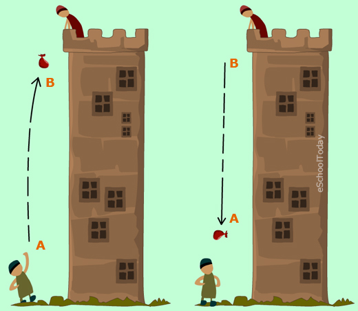
\[ \begin{align} U(x) &= mgx \\ F(x) &= -mg \end{align} \]
In both cases we have conversion from kinetic energy to potential energy U(x).
In both cases there is a force resulting from the potential field, and F(x)=-dU(x)/dx.
This is a general rule for conservative systems with no external forces.
Q: How do you control the robot to reach the goal state while avoiding the obstacle?
Q: How do you control the robot to reach the goal state while avoiding the obstacle?
A: Place a repulsive potential field around obstacles
Q: How do you control the robot to reach the goal state while avoiding the obstacle?
A: Place a repulsive potential field around obstacles and an attractive potential field around the goal
\[ U_{\text{repulsive}}(x) = \begin{cases} \left( \frac{1}{d(x,\text{obs})} - \frac{1}{r} \right)^2 & \text{if } d(x, \text{obs}) < r \\ 0 & \text{if } d(x, \text{obs}) \geq r \end{cases} \]
\[ U_{\text{repulsive}}(x) = \begin{cases} \left( \frac{1}{d(x,\text{obs})} - \frac{1}{r} \right)^2 & \text{if } d(x, \text{obs}) < r \\ 0 & \text{if } d(x, \text{obs}) \geq r \end{cases} \]
\[ U_\text{attractive}(x) = d(x, x_{\text{goal}})^2 \]
\(U(x) = \alpha U\_{\text{attractive}}(x) + \beta U\_{\text{repulsive}}(x)\)
Q1: How do we reach the goal state
from an arbitrary state?
Q2: In this example there is an unambiguous way
to reach the goal from any state. Is this true in
general?
Make the robot move by applying forces resulting from potential fields
\[ U_\text{attractive}(x) = d(x, x_{\text{goal}})^2 \]
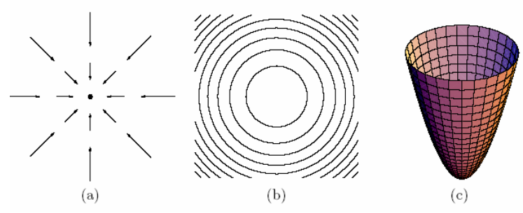
\[ F_{\text{attractive}}(x) = -\nabla_x U_\text{attractive}(x) = -2(x - x_{\text{goal}}) \]
Attractive force makes state x go to the bottom of the potential energy bowl. Bottom=Goal = low-energy state.
Move the robot using F=ma, for m=1: \[ \dot{x}_{t+1} = \dot{x}_t + \delta t F(x_t) \]
Gradient descent down the potential bowl
Make the robot move by applying forces resulting from potential fields
\[ U_\text{attractive}(x) = d(x, x_{\text{goal}})^2 \]
\[ F_{\text{attractive}}(x) = -\nabla_x U_\text{attractive}(x) = -2(x - x_{\text{goal}}) \]
Attractive force makes state x go to the bottom of the potential energy bowl. Bottom=Goal = low-energy state.
Q: Do you see any problems with this potential energy and force if x is far away from goal?
A: The farther the robot is the stronger the force. May need to normalize the force vector. Alternatively:
\[ U_{\text{attractive}}(x) = d(x, x_{\text{goal}}) \Rightarrow F_{\text{attractive}}(x) = -\frac{(x - x_{\text{goal}})}{d(x, x_{\text{goal}})} \]
Make the robot move by applying forces resulting from potential fields
\[ U_{\text{repulsive}}(x) = \begin{cases} \left( \frac{1}{d(x,\text{obs})} - \frac{1}{r} \right)^2 & \text{if } d(x, \text{obs}) < r \\ 0 & \text{if } d(x, \text{obs}) \geq r \end{cases} \]
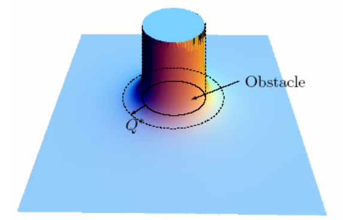
\[ F_{\text{repulsive}}(x) = \begin{cases} 2\left( \frac{1}{d(x,\text{obs})} - \frac{1}{r} \right) \frac{\nabla_x d(x,\text{obs})}{d(x,\text{obs})^2} & \text{if } d(x, \text{obs}) < r \\ 0 & \text{otherwise} \end{cases} \]
Repulsive force makes state x go away from the obstacle to lower potential energy states. Free space = {low-energy states}
Move the robot using F=ma, for m=1:
\[ \dot x_{t+1} = \dot x_t + \delta t F(x_t) \]
Gradient descent until obstacle is cleared
Potential energy
\[ U_{\text{total}}(x) = \alpha U_{\text{attractive}}(x) + \beta U_{\text{repulsive}}(x) \]
results in forces
\[ F_{\text{total}}(x) = \alpha F_{\text{attractive}}(x) + \beta F_{\text{repulsive}}(x) \]
makes robot accelerate
\[ \dot{x}_{t+1} = \dot{x}_t + \delta t F(x_t) \]
Advantages of potential fields:
Can handle moving obstacles
Fast and easy to compute
Fairly reactive
Potential energy
\[ U_{\text{total}}(x) = \alpha U_{\text{attractive}}(x) + \beta U_{\text{repulsive}}(x) \]
results in forces
\[ F_{\text{total}}(x) = \alpha F_{\text{attractive}}(x) + \beta F_{\text{repulsive}}(x) \]
makes robot accelerate
\[ \dot{x}_{t+1} = \dot{x}_t + \delta t F(x_t) \]
Q: What’s a possible problem
with addition of forces?
What’s the total potential here?
It’s zero. The repulsive force is exactly the opposite of the attractive force (assuming alpha = beta)
\[ F_{\text{total}}(x) = \alpha F_{\text{attractive}}(x) + \beta F_{\text{repulsive}}(x) = 0 \]
Problem: gradient descent gets stuck
States of zero total force correspond to local minima in the potential function:
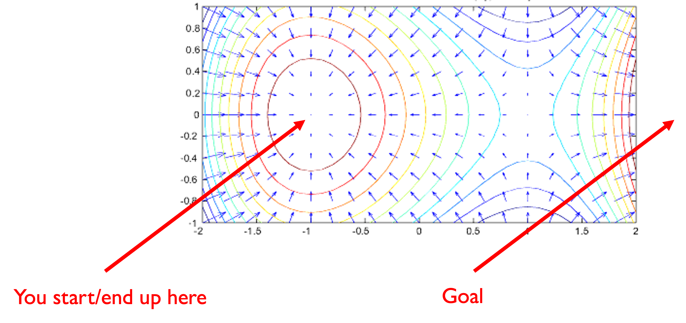States of zero total force correspond to local minima in the potential function:
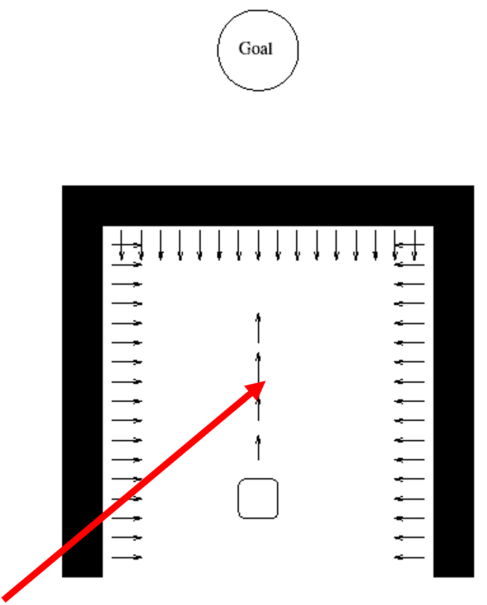Problem: If you end up here gradient descent
can’t help you. All local moves seem
identical in terms of value \(\rightarrow\) local min
States of zero total force correspond to local minima in the potential function:
Problem: If you end up here gradient descent
can’t help you. All local moves seem
identical in terms of value \(\rightarrow\) local min
Solution #1: Do random move in case
it helps you get unstuck.
States of zero total force correspond to local minima in the potential function:
Problem: If you end up here gradient descent
can’t help you. All local moves seem
identical in terms of value \(\rightarrow\) local min
Solution #2: back up and get out from
the dead end, just like you entered it.
Potential energy function \(\phi(x)\) with a single global minimum at the goal, and no local minima.
For any state x there exists a neighboring state x’ such that \(\phi(x') < \phi(x)\)
So far not used in practice very much because they are usually as hard to compute as a planned path from the current state to the goal.
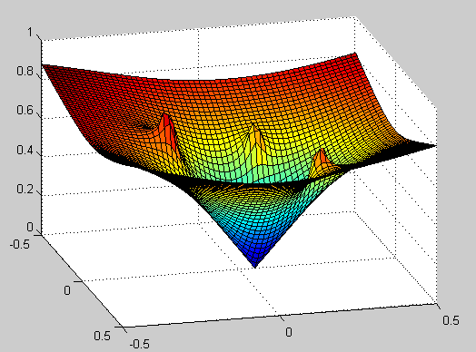
Vector Field Histogram (VFH)
Dynamic Window Approach
Both methods for local obstacle avoidance
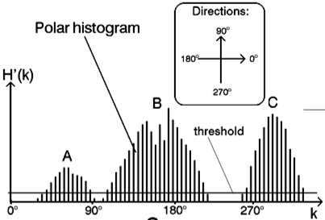
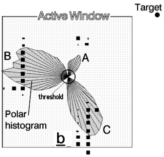
High risk for cells with high probability of being occupied.
Risk inversely proportional to distance.
Local, reactive controller
Sample a set of controls for x,y,theta
Simulate where each control is going to take the robot
Eliminate those that lead to collisions.
Reward those that agree with a navigation plan.
Reward high-speeds
Reward proximity to goal.
Pick control with highest score that doesn’t lead to collision.